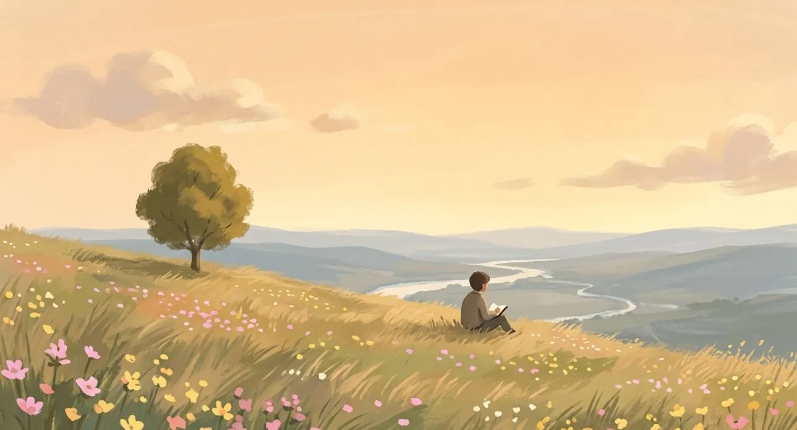

Psychology 101The path4 of 14
Psychology 101The path4 of 14How memory works5Why we forget6Learning and conditioning7
The path
Your course as one line of topics, with the parts you can skip marked.
Courses, written lessons, checks of what stuck, notes, whiteboards and a daily plan. There's no account: it runs on your own DeepSeek or OpenRouter key, and everything stays in a folder you own.
Free and open sourceNo accountNo analytics
Say what you want to learn and review the path before it's made. Lessons teach each topic the way it's best learned, checks come back days later, and your week is planned around the deadlines. Today, the planner, notes, whiteboards and flashcards work offline.
Psychology 101The path4 of 14Your course as one line of topics, with the parts you can skip marked.
Psychology 101Why we forget20 minEach topic taught the way it sticks: side by side for ideas people mix up.
Psychology 101Why we forgetOnly youIn 1885 Ebbinghaus timed his own forgetting. Forgetting is steep at first, then levels off.
exam!Circle what matters, highlight a line, and ask Bili about exactly that.
Psychology 101WhiteboardAn endless board beside the lesson, to draw it out in your own hand.
Psychology 101Check: Why we forgetNotes closedA topic counts as known only after a check, days later, notes closed.
Mon
ClassCheckTue
ClassWed
ReviewThu
Quiz 2Today, a planner, a tasks board and a calendar: classes, deadlines and study on one week.
Psychology 101Cards8 dueCards from your own lessons, shown again just before you'd forget them.
Psychology 101Ask Bilifrom your slidesAnswers come from your own files and notes, each with the page it's on.
Your courses are files on your disk, your key is sealed in the system keychain where there is one, and there are no analytics. Three things are worth knowing.
Point it at your slides and past papers. A second pass, the Checker, re-solves every auto-marked answer against your files, throws out what they contradict, and leaves its report in the course.
Paste a DeepSeek or OpenRouter key. It stops at $1 a course and $2 a day unless you change that, and Settings shows what each thing cost. Exact answers are marked by code, not by the model.
Only what you use, and only to where it has to go.
The desktop app is the free way to study on one computer. The hosted version at bilimind.com adds what needs a server.
Open bilimind.comReleased on 8 November 2026 and tested end to end on Linux. The Windows and macOS builds come from the same release workflow but haven't been run on those systems yet, and they aren't code-signed, so your system will ask before it opens them.
Node 22 or newer, and pnpm 10.
git clone https://github.com/bilimind/desktop.git
cd desktop
corepack enable
pnpm install
pnpm start
Windows, macOS and Linux · AGPL-3.0